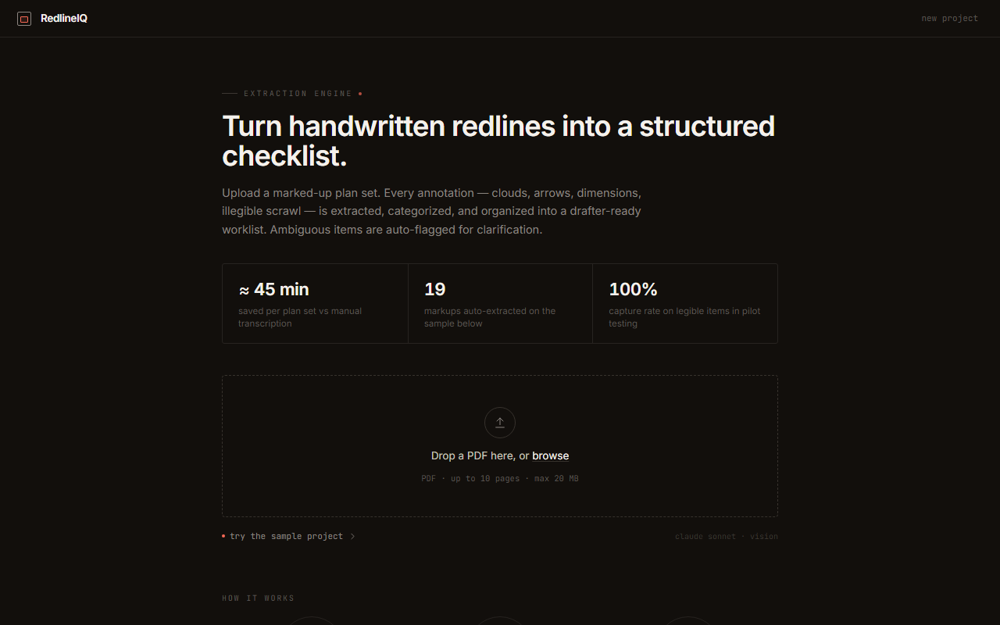

RedlineIQ
Turns a marked-up PDF into a classified, sheet-referenced checklist. Hours of manual extraction down to minutes. Granted Bluebeam developer API access.

Problem
Drafters lose hours each day decoding PM redlines before they touch Civil 3D. I did this job for two years.
Approach
A source-type router parses digital PDFs losslessly and falls back to a vision model for scanned sheets. An eval harness with labeled golden sets and a versioned prompt registry keeps accuracy honest.
ReactNodeExpressVision + text LLMSQLiteLangfuseSentry